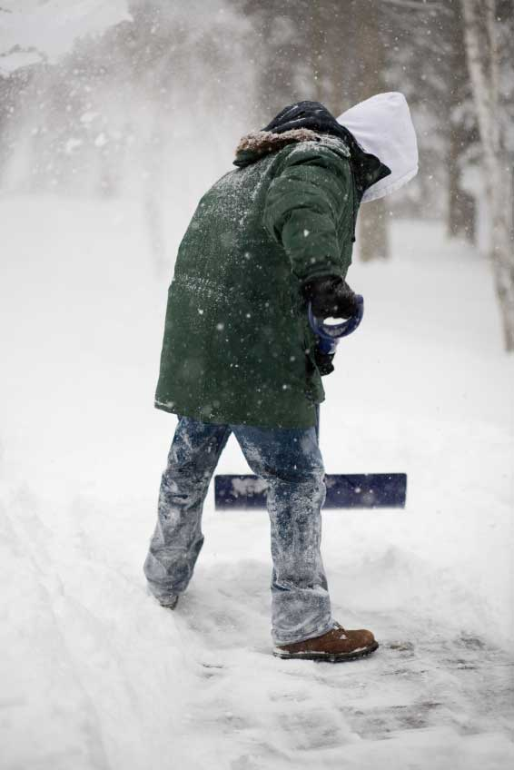

Brrr, it’s cold outside! Frigid temperatures and record snowfall in many areas may leave some people wondering what happened to global warming. Given the whiter-than-normal winter, is the Earth really still heating up?
For insight, we turned to Brenda Ekwurzel, a climate science expert with the Union of Concerned Scientists, who has studied climate change for 17 years. Her research has stretched from the arid U.S. Southwest to icebreaker ship expeditions to the North Pole. She stays abreast of the latest science to help inform the public and policymakers.
Q: Could colder temperatures and more snow be signs that global warming is not happening?
A: No singular weather event or even a colder year represents a change in global warming. Weather is the temperature or precipitation over a couple of days. Climate refers to the average temperature or weather patterns over a decade or more. Global warming occurs over a long period of time, therefore gradual shifts to a warmer climate represents global warming. One event, such as increased snowfall or a heat wave, will not significantly change the climate pattern from the last decade. You have to look at what has happened over time, not in the past month or two, to determine if there is general trend of warming.
Q: Could some extreme weather events signify a shift in climate patterns?
A: Yes, actually. Because the Earth is heating up, the air is warmer and more humid and evaporation occurs faster, leading to an intensification of precipitation. This means that during the winter months, in many parts of the United States, we’re more likely to experience intense snowfall and in the summer months intense rainfall. If you look at these events over a long period of time though, the total annual volume of rain may not change as significantly as it may appear. There are just more occurrences of heavy rain events. The increase in intense rain can lead to flooding and longer dry periods in between.
Q: Other than more intense precipitation, what are some indicators that global warming is actually occurring?
A: The timing of spring and fall are indicators that global warming is happening. The spring season is coming earlier and fall is happening later. This makes for a shorter winter season and a longer summer season. Other evidence includes the accelerated melting of glaciers in Greenland and West Antarctica, and the diminishing habitat for some wildlife species, placing them at risk for extinction.
Q: Warmer temperatures could cause some species to die off?
A: Plants and animals that live near the tops of mountains can only move upslope so far before they “run out of mountain.” As sea-levels raise, roads, buildings and infrastructure could block animals and plants from moving. Animals that live their entire lifecycle on the Arctic sea/ice face grave danger because many studies indicate that in the coming decades the Arctic Ocean could become ice-free for the first time during the summer months. Additionally, decreasing water resources coupled with warmer climates makes it nearly impossible for some already threatened species to survive.
Q: What are some ways we can stop the Earth from getting even warmer?
A: Gases trap heat and warm the atmosphere for decades or centuries after they were released into the air. Burning fossil fuels just traps more heat on Earth. Think of when you are going to bake cookies. You have to preheat the oven, so you turn the oven to whatever temperature the recipe calls for and wait for the oven to warm up. For awhile now, the Earth has been preheating. The oceans have acted as a buffer, so the Earth has not yet reached that preheating temperature. Meanwhile, we are continuing to increase the temperature dial on the oven. We are preheating the Earth to an even higher temperature. We have evidence that we are going to see more changes because of this. The ice will continue to melt in the Arctic and Antarctica, and we will experience warmer temperatures year round. We can stop the Earth from heating to very dangerous levels if we successfully harness renewable fuel like solar or wind power and decrease our use of fossil fuels.
At the Union of Concerned Scientists Web site, you can learn much more about global warming, including easy to understand reports on the latest research from the world’s leading scientists. You also can easily take action and tell Congress to support renewable energy, low carbon fuels and other proactive measures.
|
ISTOCKPHOTO/BILL GROVE Extreme winter weather doesn’t signal a reversal in global warming trends. |
 ISTOCKPHOTO/RITA JACOBS Global warming is probably the last thing on your mind when you’re shoveling a foot of snow off the driveway, but extreme cold is just another part of the trend. |
|